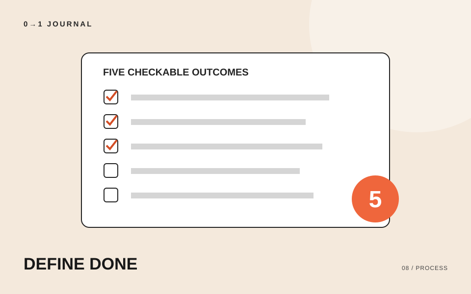

この記事の目次
写真を変え、色を直し、次は動きを加えたくなる。ページはできているのに制作が終わらないなら、見た目を調整する前に「何を満たせば今回の完成か」を文章にしてみましょう。この記事では、一つのサイトを公開したい人に向けて、確認できる完成条件の作り方を紹介します。
題材は架空の小さな展示会サイトです。予約は不要で、来場者が日時と場所を確認するための1ページを作る想定です。以下の条件は、この模擬案件のための例であり、どのサイトにも十分な共通基準ではありません。
「見やすい」を、確かめられる結果に置き換える
「見やすい」「使いやすい」は制作の方向として使えても、それだけでは完了を判定しづらい言葉です。誰が、何をして、どうなればよいかを足してください。
たとえば「アクセスを分かりやすくする」は、「会場案内に住所と入口の説明があり、地図リンクを開くと指定した会場を確認できる」と書き換えます。これなら、文章の有無とリンク先を実際に見て判断できます。
「リンクを確認する」は作業名です。「指定した会場を確認できる」まで書くと、期待する結果になります。条件を読み返して、作業をしたという報告だけで合格にできてしまわないかを点検しましょう。
展示会の目的から、今回の5項目を作る
このサイトの目的は「初めて来る人が開催日時と会場を調べて来場できること」とします。目的から必要な情報と操作を拾うと、完成条件のたたき台は次のようになります。
- 展示名、開催日、開場・終了時刻が、主催者の確定原稿と一致している。
- 入場料と予約不要であることが、開催案内に明記されている。
- 会場の住所と入口の説明があり、地図リンクで指定した会場を確認できる。
- 確認用に選んだスマートフォンで、開催案内の文字が重ならず、住所の末尾まで読める。
- 問い合わせ先が確定原稿と一致し、案内された方法で連絡できることを担当者と確認している。
「スマートフォンで見る」だけにせず、確認する端末とブラウザを作業メモに追記します。実際の案件では、扱う機能や利用場面に応じて項目を追加してください。5つは今回の練習量であり、十分さを保証する数ではありません。
条件・結果・確認者を一緒に残す
条件ごとに「未確認」「達成」「未達」のいずれかを付け、確認日と確認者も書きます。未確認を空欄にしておくと、単なる記入忘れかどうかが分かりません。
たとえば3番は「未達。地図が同名の別会場を表示。リンク先を修正し、担当者が再確認」と記録できます。「要修正」だけよりも、次の担当者が何を確かめればよいかが明確です。
自主制作なら確認者は自分で構いません。依頼者がいる制作では、どの原稿を正とするか、誰が結果を確認するかも先に相談します。確認できていない情報を、自分の推測で達成扱いにしないことが大切です。
未達の修正と、後から出た要望を分ける
地図の行き先が違うなら、決めた条件を満たすための修正です。一方、「作品紹介をもう1ページ追加したい」は、今回の1ページの範囲に含まれていない要望です。
追加要望は消さずに別のメモへ残し、今回に含めるか、公開後の課題にするかを決めます。今回に含める場合は、作る範囲と完成条件を書き直しましょう。最初に書いた条件を理由に、必要な変更をすべて断るための仕組みではありません。
サイトの目的から整理し直したい場合は、最初に決めておきたい5つのことを参照してください。目的が変わったなら、完成条件もそのままにはできません。
15分を目安に、自分のページの条件を点検する
制作中のページを一つ選び、完成条件を5つ書いてください。そのうち「きれい」「分かりやすい」が入った文を、具体的な情報や操作の結果に置き換えます。次に一項目だけ実際に確かめ、結果と確認した環境を残しましょう。
他の人がその一文を読んでも、同じ場所を同じ方法で確かめられるかが見直しのポイントです。操作の確認項目を詳しく作る練習には、QAの無料レッスンも使えます。
記載内容へのご質問や訂正のご連絡は、hello@junkbranding.comまでお願いします。